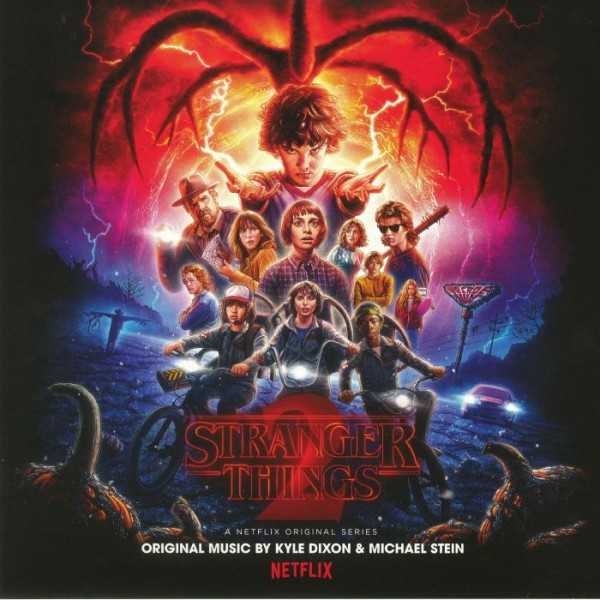

Altered CarbonAltered Carbon is a 2002 science fiction novel by Richard K. Morgan. Set in a future in which interstellar travel is affected by transferring consciousnesses between bodies ("sleeves"), it follows the attempt of Takeshi Kovacs, a former U.N. elite soldier turned private investigator, to investigate a rich man's death. It is followed by the sequels Broken Angels and Woken Furies. The book was adapted as a Netflix television series, also titled Altered Carbon, in 2018. |
|
|  |
Stranger ThingsStranger Things is an American science fiction-horror web television series created, written, directed and co-executive produced by The Duffer Brothers, as well as co-executive produced by Shawn Levy and Dan Cohen. The first season, released in July 2016, stars Winona Ryder, David Harbour, Finn Wolfhard, Millie Bobby Brown, Gaten Matarazzo, Caleb McLaughlin, Natalia Dyer, Charlie Heaton, Cara Buono and Matthew Modine, with Noah Schnapp and Joe Keery in recurring roles. For the second season, Schnapp and Keery were promoted to series regulars, along with the additions of Sadie Sink, Dacre Montgomery, Sean Astin and Paul Reiser. |
Blade RunnerTBlade Runner is a 1982 American neo-noir science fiction film directed by Ridley Scott, written by Hampton Fancher and David Peoples, and starring Harrison Ford, Rutger Hauer, Sean Young, and Edward James Olmos. It is a loose adaptation of the 1968 novel Do Androids Dream of Electric Sheep? by Philip K. Dick. The film is set in a dystopian future Los Angeles of 2019 in which synthetic humans known as replicants are bioengineered by the powerful Tyrell Corporation to work on off-world colonies. When a fugitive group of replicants led by Roy Batty (Hauer) escape back to Earth, burnt-out cop Rick Deckard (Ford) reluctantly agrees to hunt them down. |